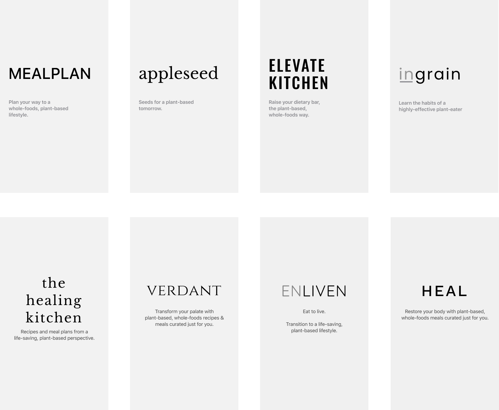

ROLES
- Design Strategist
- Web Designer
- Visual Designer
DELIVERABLES
- High-fidelity mockups
- Structural wireframe of site
- Competitive analysis
- (In progress) HTML & CSS prototype of the responsive web page
SPECIFICATIONS
- Duration:
- 2 Weeks
- Tools:
- Figma
- Sketch app
- Photoshop
Overview
Ingrain is a plant-based, meal-planning app for people who wish to transition to plant-based eating to improve their health. After developing the app design at a high-fidelity prototype level, the next step is to design the product feature page that effectively communicates all the ways that Ingrain adds value to the user.
The backstory
When I expressed a desire to grow in the area of motion design, my mentor suggested that I create a series of high-fidelity interactive prototypes that will be featured in a product showcase page. In order to create those interactive prototypes, I designed Ingrain’s screens to be at the level of a high-fidelity wireframe. Now that the product concept has been designed, it’s time to introduce it to the world.
Curious about the Ingrain meal-planning app?
View the strategic pivots that redefine the scope of the MVP in Part 1: UX Strategy
Design Strategy
Refining the message architecture and content structure to create a product page that encourages users to engage with content.
Analyze
Positioning for success
Message architecture
By focusing on the product's primary differentiators and highlighting areas where it is positioned to add the most value to the user, I was able to create a preliminary skeleton of the page's contents.
Positioning
A user-focused meal-planning app from a plant-based perspective—available to users free of charge.
A meal-planning tool for those who seek to reverse their chronic diseases by eating a plant-based diet, available free of charge to all who need a soft form of accountability into transition to plant-based, whole-foods eating. Like the Berlin-based Kitchen Stories app, Ingrain will monetize through kitchen product placements.
Value Proposition 1
Personalized meal-planning tailored to the user's cuisine preferences and body characteristics.
By answering a few questions to create a dietary profile, Ingrain will create daily serving recommendations of plant food groups for the user and suggest recipes that closely match the user's food preferences.
Value Proposition 2
Decrease the obstacles to meal-planning as much as possible.
Ingrain allows users to adjust serving sizes and quickly add ingredients to a grocery shopping list. It even flags allergens and food dislikes that the user specifies in their dietary profile.
Value Proposition 3
Offer a tool to track one’s progress
An interactive food tracker allow users to track their progress towards their recommended daily food servings, teaching the user to create balanced, plant-based meals appropriate to their body characteristics, so they can stave off hunger during their transition.
Studying the competition
I examined how the four top players in the meal-planning space structure their product pages, among them are Pinto, Forks Over Knives (FoK), ChooseVeg, and 22 Days of Nutrition. Of the four, Pinto and Forks Over Knives had the most compelling landing pages.
Here is a comparison between Forks Over Knives and Pinto's page structures:
Comparison summary
Both FoK and Pinto have an almost 1:1 ratio of feature set to CTAs, both also concentrated the frequency of CTAs towards the beginning of the product page.
In terms of navigation, both opted not to have fixed nav-bars despite the length of the product page.
FoK and Pinto took different approaches to their respective hero contents. Pinto featured an app interaction sequence for its hero content whereas FoK features a static hero content. Due to its level of information density, Pinto makes use of interactive infographics to convey an app feature that ties in nicely to the CTA that follows.
Structure
Strategizing page content
The initial page structure of Ingrain features an almost 1:1 ratio between feature set and CTAs. I opted to remove the recurring CTA of “get our free app” from the page-flow and unto the fixed top navigation bar. This allows me to reduce the number of CTA's throughout the entire product page—giving the featured recipe content all the room to take center stage.
Laying out the product page
Ingrain’s product page comprises of four primary types of layouts: hero, product feature, social proof, and closing hero. Here are the variants considered within each layout type.
Hero variants
Feature layout variants
Social proof layout variants
Closing hero layout variants
Branding
Logo and graphic design
The origin of the name
The name ‘ingrain’ is chosen because its multi-layered associations to plant-based eating. The word ingrain can be interpreted as ‘ingraining an eating habit in someone.’ It is also a play on the food group ‘grain,’ one of the four plant-based foods.
Here are a few of the other name alternatives considered:
Logo Design
The symbol of a mortar and pestle was chosen because it connects the idea of food with medicine. As one of the oldest food-preparation instruments used in cultures from around the globe, it is also used by apotecharies to crush medicinal herbs. From a branding standpoint, it stands out nicely against the logos of competitors that usually highlight familiar cooking or eating utensils.

Style Tile

Design iterations and preference tests
Hero image preference test
“Here are two options of the landing page hero for a meal-planning app. Which one does a better job in conveying what the app is about and encouraging you to engage with the content?”
67%
33%
Feature layout preference test
Here are two options of a carousel showing the content for a meal-planning app. Which one does a better job of encouraging you to explore?
100%
Final design
Responsive product page
Here is the high-fidelity mock-up of the responsive product page. I went with the minimized-CTA approach and alternated the product feature layout with social proof layout before closing with a strong combination of a user testimonial and the hero animation.
The fully-coded HTML and CSS prototype of the responsive product page is in progress.